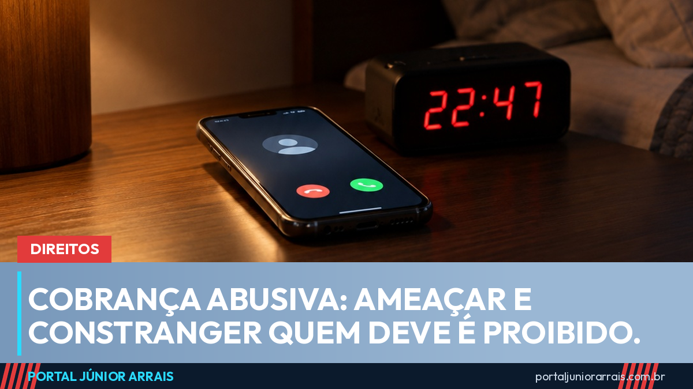

Cobrança abusiva: o que o credor não pode fazer e quando cabe devolução em dobro

Estar devendo não tira os direitos de ninguém. O Código de Defesa do Consumidor (CDC) permite que a empresa cobre o que é devido, mas proíbe expor o consumidor ao ridículo, ameaçá-lo ou constrangê-lo (art. 42). As formas mais graves de cobrança abusiva são crime (art. 71). E quem pagou um valor cobrado indevidamente tem direito a receber de volta em dobro o que pagou a mais.
O que a lei proíbe na cobrança
O art. 71 do CDC considera crime usar ameaça, coação, constrangimento físico ou moral, afirmações falsas ou qualquer procedimento que exponha o consumidor ao ridículo sem justificativa ou que interfira no seu trabalho, descanso ou lazer. A pena prevista é de detenção de 3 meses a 1 ano, além de multa.
Na prática, são exemplos de conduta abusiva:
- ameaçar com prisão por dívida comum, quando a única prisão civil por dívida admitida no país é a do devedor de pensão alimentícia;
- contar a vizinhos, parentes ou colegas que a pessoa está devendo;
- ligar para o local de trabalho para pressionar ou expor o devedor;
- fazer ligações seguidas, várias vezes ao dia, à noite ou nos fins de semana;
- mandar cartas ou mensagens que imitam intimação judicial para assustar.
O CDC também exige, no art. 42-A, que todo documento de cobrança traga o nome, o endereço e o CPF ou CNPJ de quem está cobrando.
Quando cabe a devolução em dobro
Pelo parágrafo único do art. 42, quem foi cobrado em quantia indevida e pagou tem direito a receber o dobro do que pagou em excesso, com correção monetária e juros, salvo quando houve engano justificável. A cobrança que não chegou a ser paga não gera a devolução em dobro, embora possa gerar outros direitos, conforme o caso.
Por muito tempo, discutiu-se se o consumidor precisava provar que a empresa agiu de má-fé. Em 2020, a Corte Especial do Superior Tribunal de Justiça decidiu, no EAREsp 676.608, que não é preciso provar má-fé: basta que a cobrança seja contrária à boa-fé objetiva, isto é, ao comportamento leal que se espera de quem cobra.
O tribunal fixou um marco temporal: nos contratos que não são de serviço público, como os de bancos e lojas, esse entendimento vale para as cobranças feitas depois da publicação do acórdão, em março de 2021. São exemplos comuns de cobrança indevida a tarifa não contratada, a parcela já quitada e o seguro embutido sem autorização.
Guarde as provas
Quem sofre cobrança abusiva precisa reunir provas desde o primeiro contato. Vale guardar:
- prints das mensagens, com data, hora e número de quem enviou;
- gravações das ligações de que você participou;
- o histórico de chamadas recebidas;
- números de protocolo de atendimento e comprovantes de pagamento.
Com esse material em mãos, procure um profissional de sua confiança para avaliar o caso. Se as dívidas já fugiram do controle, a lei também prevê um caminho para quem está endividado além da conta.
Cuidado com golpe
Golpistas se passam por empresas de cobrança, citam o nome e o CPF da vítima para parecer confiáveis e mandam boleto falso com "desconto válido só hoje". Outros ameaçam com processo e pedem Pix urgente para a conta de uma pessoa física. A mesma tática aparece nos anúncios falsos de renegociação.
Tribunal e órgão público não cobram dívida por Pix nem pedem senha, e intimação verdadeira não chega acompanhada de boleto para pagar na hora. Na dúvida, não pague e procure um profissional de sua confiança.
Conteúdo informativo — não substitui orientação individualizada sobre o seu caso.
Júnior Arrais · Editor do Portal Júnior Arrais
Comunicador de Ubá (MG). Escreve todos os dias sobre benefícios sociais, INSS, trabalho e economia do dia a dia, a partir do Diário Oficial, de portarias e de fontes oficiais, em linguagem simples. Conheça a linha editorial e a política de correções do portal.